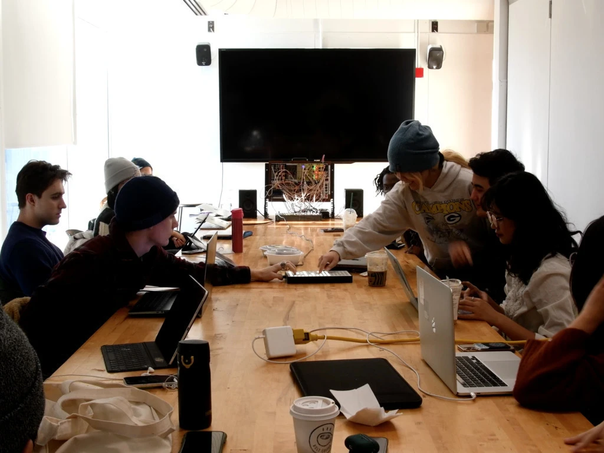

Grid Ops Binary Left Shift Rotating
Watch the performance
Listen to the performance
Interactive performance for According to Chance Wintersession Class at RISD using the Monome Grid and my Eurorack Modular
#1 EV + 1 G.FDR.N 0: I2M.N# J K A J PN * B 2 0; D ? PN B 0 3 0 B G.BTN.V 8 C * B 2 #2 EV + 1 G.FDR.N 0: I2M.N# J K A J PN * B 2 1; K PN ? B 0 1 1 IF < Z 4: CV 1 V 5 DEL * LAST 2 2: CV 1 V 0 #3 EV + 1 G.FDR.N 0: I2M.N# J K A J PN * B 2 2; K PN ? B 0 1 2 IF < Z 4: CV 2 V 5 DEL * LAST 3 2: CV 2 V 0 CV 3 N + 65 % T G.FDR.N 11 CROW.AR 1 0 / LAST 1 4 V 5 #4 EV + 1 G.FDR.N 0: I2M.N# J K A J PN * B 2 3; K PN ? B 0 1 3 CV 4 N + 36 % T 9 CV.OFF 4 N + 12 G.FDR.N 13 CROW.AR 2 0 / LAST RND 2 4 V 5 #5 EV + 1 G.FDR.N 0: I2M.N# J K A J PN * B 2 4; K PN ? B 0 1 4 #6 EV + 1 G.FDR.N 0: I2M.N# J K A J PN * B 2 5; K PN ? B 0 1 5 #7 EV + 1 G.FDR.N 0: I2M.N# J K A J PN * B 2 6; K PN ? B 0 1 6 Z G.FDR.N 14 #8 EV + 1 G.FDR.N 0: I2M.N# J K A J PN * B 2 7; K PN ? B 0 1 7 #M T + T 1; X G.FDR.N 11; CV 4 O M + + 20 * G.FDR.N 9 20 J J << G.FDR.N 10 RND Z Y BGET X % T G.FDR.N + 12 K TR.P ? Y ? Z 1 4 ? TOSS 2 3 K RND * G.FDR.N 13 4; $ 7 #I G.FDX 0 0 0 4 1 0 0 0 1 8 A 127; T 0; M.ACT 1; $ 1 G.BTN 8 4 0 1 1 1 0 1 G.FDR 9 4 1 1 7 1 0 0 G.FDX 10 5 0 1 8 1 0 0 5 1 PARAM.SCALE 0 10 #P 8 8 8 8 1 1 1 1 0 0 0 0 63 63 63 63 10 36 1 36 10 48 2 37 10 41 3 38 10 58 4 39 10 40 5 40 10 49 6 41 10 42 7 42 10 39 8 43
incoming gear